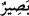

Aslında normal kurallara göre burada “ömür verilseydi” şeklinde gâib sîgası ile değil,
“Keşke ömrüm uzun olsa” şeklinde mütekellim sigâsıyla olmalıydı. Ama burada “ister”
( ) fiiline uygun olsun diye, ikisi de gâib sîgasıyla getirildi. Mânâ: “Onlardan her biri
kendisine bin yıllık ömür ve ölümsüzlük verilmesini arzu eder.” şeklindedir. ( )
kelimesi, bin sene mânâsındadır. Bu, mecûsîlere âid bir durumdur. Burada sayının
belirtilmesi, onların aksıran birine ve selâm verdiklerine: “Bin yıl, bin nevrûz, bin
mihricân kadar yaşa.” demeleri sebebiyledir. Bu kelime “Hezarsâl” gibi Farsça bir
deyimdir. Mecûsîlere müşrik denmesi câizdir. Çünkü onlarda nûr ve zulmet adına yemin
ederek konuşurlardı. Oysa uzun ömürlü olmak kimsenin azâbını uzaklaştırmaz.
Âyetteki ( ) fiili uzaklaştırmak ve kurtarmak mânâsına gelir. Azâbdan kasıt,
cehennemdir.
“Allah işlediklerini görmektedir.” cümlesindeki “Basîr” (  ) kelimesi, Arap
dilinde bir şeyin künhüne vâkıf olmak, ondan haberdar olmaktır; yâni Allah onların
küfür ve günaha âid işledikleri şeylerin hepsini tüm incelikleriyle bilir, ona hiçbir şey
gizli kalmaz. Şüphesiz ki onları günahları sebebiyle dünyâda rezîllik ve âhırette
cehennem ile cezâlandırır.
Kişi ister bin yıl yaşasın, ister daha fazla yaşasın, bu dünyâ hayatı çabucak
geçmektedir. Esas kazanan, uzun ömrü; hayırlı amel işlemek için isteyendir.
Peygamberimiz (s.a) buyurmuştur: “Ömrü uzun ve ameli güzel olan kimselere ne
mutlu!”[335] Esas kaybeden de uzun ömrünü fesâd için isteyendir. O, sapıtır ve korktuğu
ölümden kurtulamaz. Çünkü ölüm, muhakkak gelecektir. Ümmet-i Muhammed’in (s.a.)
ittifâkıyle, ölüm için belli bir yaş, belli bir zaman ve belli bir hastalık yoktur. İşte
bundan dolayıdır ki, kişiye gereken; her an ölüme uygun bir hazırlık içinde bulunmaktır.
Sâlihlerden ölüme hazırlıklı olan bir zât vardı. Bu kimse, her gece şehrin kalesinden:
“Yolculuk! Yolculuk!” diye nidâ ederdi. Ölünce, şehrin meliki onun sesini işitemez
oldu. O adama ne olduğunu sorunca etrafındakiler, öldüğünü söylediler. O zaman melik
şu şiiri inşâd etti:
Zikrederek hayat göçünü sürdüren kimsenin
Kapısına, kervancı gelip devesini çöktürdüğünde
Onu uyanık bir kalb ile ölüme hazır bulur,
Hazırlığı olanı; arzu ve istekler zikirden alıkoyamaz.
Seni davulun sesi bile uyandıramıyor,
Meğer sen, uykuda değil, ölüymüşsün.
Sen, mumu rüzgârın önüne koymuşsun.
Sen evi sel akıntısının üstüne kurmuşsun.
Ömür, ne kadar uzun, hayat ne kadar çok olursa olsun, ölümün bir gün gelmesi haktır.
O, râzı olsun olmasın, herkesin başına gelecektir. el-Hutab kitabının şârihi, Vehb b.
Münebbih (r.a.)’ın şöyle dediğini rivâyet etti: